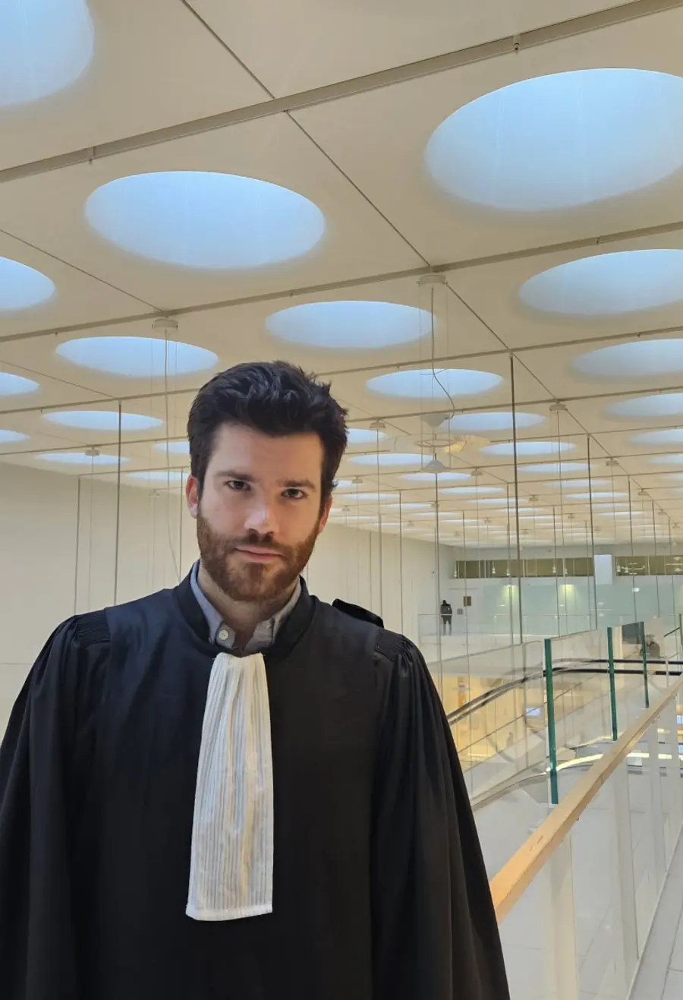

CharlesCulioli-Paoli
Avocat pénaliste à ParisUne défense pénale exigeante, disponible et discrète, de la garde à vue à l'exécution de la peine, pour les personnes mises en cause comme pour les victimes.

Une défense sur mesure
Un avocat indépendant, un interlocuteur unique. Chaque dossier est lu, compris et défendu personnellement par Charles Culioli-Paoli.
Chaque dossier pénal raconte une histoire incomplète. Mon travail est de la lire entièrement, puis de la rendre audible devant le juge.
 Charles Culioli-PaoliAvocat au Barreau de Paris · citation à valider
Charles Culioli-PaoliAvocat au Barreau de Paris · citation à validerRigueur
Lecture intégrale de la procédure, contrôle de chaque acte, stratégie expliquée sans détour.
Disponibilité
Intervention rapide en garde à vue, joignable aux moments où tout se décide.
Discrétion
Le secret professionnel comme règle de travail, pour les particuliers comme pour les dirigeants.
Culture internationale
Formé à Harvard Law School et à Sciences Po, à l'aise avec les dossiers qui franchissent les frontières.
Garde à vue, convocation, mise en examen ?
Parler de votre dossierÀ chaque étape, une même défense
Faites défiler : de la plainte à l'exécution de la peine, découvrez comment l'avocat intervient.
Déposer plainte ou y répondre
Une plainte rédigée avec un avocat expose clairement les faits et les préjudices. La personne visée peut préparer sa défense dès ce stade.
Plainte avec partie civileCitation directeEn savoir plus Garde à vue · 24 à 48 heuresÊtre assisté dès la première heure
Entretien confidentiel, consultation de pièces, présence pendant les auditions : le moment le plus exposé de la procédure.
Droit au silenceEntretien de 30 minEn savoir plus Enquête · Préliminaire ou flagranceAnticiper les suites
Perquisitions, réquisitions, auditions : l'avocat anticipe les orientations possibles du parquet.
PerquisitionAudition libreEn savoir plus Instruction · Juge d'instructionAgir dans le dossier
Mis en examen ou témoin assisté : demandes d'actes, nullités, demandes de mise en liberté.
Mise en examenDétention provisoireEn savoir plus Audience · Tribunal ou courPlaider le dossier
Tribunal correctionnel, cour criminelle départementale, cour d'assises : une préparation longue, une parole précise.
Comparution immédiateCour d'assisesEn savoir plus Exécution · Après la décisionObtenir un aménagement
Bracelet électronique, semi-liberté, libération conditionnelle : la défense continue devant le juge de l'application des peines.
Bracelet électroniqueLibération conditionnelleEn savoir plusSept domaines, un seul cap
Du droit pénal général aux dossiers internationaux, chaque domaine dispose d'une page détaillée.
Droit pénal général
Personnes mises en cause et victimes, de l'enquête à l'audience.
Garde à vueInstructionVictimesDroit pénal des affaires
Abus de biens sociaux, blanchiment, fraude fiscale, corruption.
Abus de biens sociauxBlanchimentFraude fiscaleExtradition
Mandat d'arrêt européen et demandes d'extradition.
Mandat d'arrêt européenChambre de l'instructionDroit pénal international
Notice rouge Interpol, entraide pénale, dossiers transfrontières.
Notice rouge InterpolEntraide pénaleAménagement de peine
Bracelet électronique, semi-liberté, libération conditionnelle.
BraceletSemi-libertéJAPCybercriminalité
Cyberattaques, fraude informatique, escroqueries en ligne.
CyberattaqueFraude informatiquePlaidoirie
Tribunal correctionnel, cour criminelle départementale, cour d'assises.
Cour d'assisesTribunal correctionnelPrestation de serment 2025à confirmerParis, Cambridge, le Parquet
- Fedida & AssociésDéfense pénaleà confirmer
- Schapira AssociésDéfense pénaleà confirmer
- Parquet de ParisMinistère publicà confirmer
- Ministère de l'ÉconomieAdministrationà confirmer
Où le cabinet intervient
Paris en priorité, l'Essonne en second cœur d'activité, et partout en France lorsque la défense l'exige.
Un proche est détenu ?
Recherchez l'établissement : le cabinet se rend en détention pour les demandes de mise en liberté, la discipline et l'aménagement de peine.
- Centre pénitentiaire de Fleury-MérogisEssonne (91)Page dédiée
- Centre pénitentiaire de FresnesVal-de-Marne (94)Bientôt
- Prison de Paris-La SantéParis (75)Bientôt
- Maison d'arrêt de VillepinteSeine-Saint-Denis (93)Bientôt
- Centre pénitentiaire Sud-Francilien, RéauSeine-et-Marne (77)Bientôt
- Maison d'arrêt de Bois-d'ArcyYvelines (78)Bientôt
- Maison d'arrêt de NanterreHauts-de-Seine (92)Bientôt
- Maison d'arrêt du Val-d'Oise, OsnyVal-d'Oise (95)Bientôt
- Maison d'arrêt de Lyon-CorbasRhône (69)Bientôt
- Centre pénitentiaire de MarseilleBouches-du-Rhône (13)Bientôt
- Centre pénitentiaire de ChâteaurouxIndre (36)Bientôt
- Centre pénitentiaire de BorgoHaute-Corse (2B)Bientôt
- Aucun établissement trouvé. Contactez le cabinet, il intervient dans toute la France.
Un proche est en garde à vue ?
Le cabinet intervient en urgence à Paris et en Essonne. Pour toute autre demande, décrivez votre situation : vous serez recontacté rapidement.